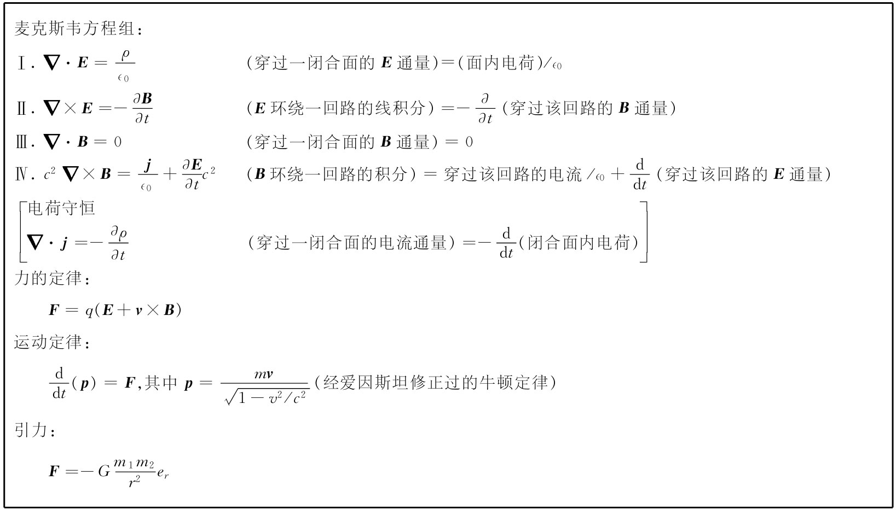
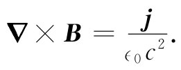
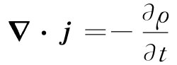
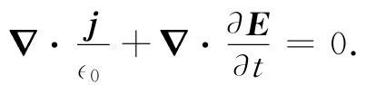

本章我们将回到第1章中作为我们起点的、由四个式子构成的、完整的麦克斯韦方程组。到目前为止，我们已经零碎地研究过麦克斯韦方程组，现在是把最后一部分加进去并将其全都合起来的时候了。于是对于可能以任何形式随时间变化的电磁场，我们将有完整而又正确的描述。在这一章中所谈到的任何事情与以前谈到的事情发生矛盾的话，则都以本章为准，以前所谈到的是错误的——因为以前所论述的只适用于诸如恒定电流和固定电荷那样一些特殊情况。尽管过去每当我们写出一个方程时总是十分细心地指出它受到的限制，但很容易把所有的限制条件都忘记了，而且很容易对那些不正确的方程学得过分认真。现在我们准备给出全部真理，而不附带（或几乎不具有）任何限制条件。
整套麦克斯韦方程组列于表18-1中，其中包括语言和数学符号两种表达方式。语言与方程式等效这一事实从现在就应该熟悉它——你应当能够从一种形式顺利地变换到另一种形式。
表18-1 经典物理学
第一个方程——E的散度等于电荷密度除以∈0 ——是普遍正确的。无论对于动态场或静态场，高斯定律永远正确。穿过任何闭合面的E通量与面内电荷成正比。第三个方程是与第一个方程相对应的、关于磁场的一般定律。由于不存在磁荷，所以通过任一闭合面的B通量总是等于零。第二个方程，即E的旋度为-∂B/∂t，这就是法拉第定律，我们在前面两章中已经讨论过了，它也是普遍正确的。最末一个方程含有某种新的东西，以前我们只看到对恒定电流才适用的那一部分。在那种情况下，我们曾经说过B的旋度为j/（∈0 c2 ），但普遍正确的方程则还带有一个由麦克斯韦发现的新的项。
在麦克斯韦完成其工作以前，电和磁方面的已知定律就是从第3章至第17章中我们曾经学习过的那些。特别是，关于恒定电流的磁场方程仅仅知道为
 （18.1）
麦克斯韦从考虑这些已知定律开始并将其表达成微分方程，正如我们这里曾经做过的那样（虽然当时▽这一符号尚未发明，但今天我们称为旋度和散度的那些微商组合的重要性，就是由于麦克斯韦才首次显示出来）。后来他又注意到式（18.1）有些奇怪。如果我们取这一方程的散度，左边将是零，因为一个旋度的散度始终等于零，所以这一方程要求j的散度也是零，但如果j的散度为零，则从任何闭合面跑出来的电流总通量也将是零。
来自一闭合面的电流通量等于该面内电荷的减少。一般地说，这肯定不能为零，因为我们知道电荷可以从一处移至另一处。事实上，方程
 （18.2）
几乎已是我们关于j的定义了。这一方程表示电荷守恒这样一个最基本定律——任何电荷流动都必须来自某个供应处。麦克斯韦认识到这一困难，并提出可以通过在式（18.1）右边加进∂E/∂t这一项来加以避免，于是他就得到了表18-1上所列的那第四个方程：
在麦克斯韦时代人们还不习惯于用抽象的场来进行思考。麦克斯韦曾利用好像弹性固体那种真空来讨论他的概念。他也尝试过用这种机械模型来解释他新方程的意义。当时对接受他的理论存在不少阻力，首先是由于他的模型，而其次则是由于当初尚未有实验证明。今天，我们更好地了解到，争论点在于那些方程本身，而并不是用来获得它们的那种模型。我们仅仅可以质问这些方程是正确的呢还是错误的。这要通过做实验来回答，而无数实验都已证实了麦克斯韦方程组。如果把他用以建立他大厦的脚手架搬开，我们将发现麦克斯韦的华丽大厦本身仍巍然屹立。他把所有关于电学和磁学的定律都综合在一起而形成一套完整而又漂亮的理论。
让我们来证明这一附加项正好是为解决麦克斯韦所发现的那个困难所必需的。如果对他的方程（表18-1上的式Ⅳ）取散度，则右边的散度就应为零：
 （18.3）
在第二项中对坐标与对时间取微商的次序可以对调，因而该方程可以写成
但麦克斯韦方程组中的第一个方程表明，E的散度为ρ/∈0 。将这个等式代入式（18.4）中，则又回到式（18.2），我们知道它是正确的。反过来，若接受麦克斯韦方程组——事实上，我们接受了，因为没有任何人发现过一个实验与这些方程不相符——则我们必定得出结论：电荷总是守恒的。
物理规律没有回答下述问题：“如果电荷突然在这里产生，则会出现什么？有哪一些电磁效应该会发生？”对此没有答案可以提供，因为我们的方程组表明，上述情况是不会发生的。要是 它真的发生的话，便需要一些新的定律，但我们无法讲清楚这些定律会是怎么样的，因为还没有机会去观察一个电荷不守恒的世界将会怎样行动。按照我们的那些方程，如果你突然将一电荷放在某处，那你一定是从别处把它带到那里的。在那种情况下，你就能够说出将会发生什么了。
当我们对E的旋度方程添加一新项时，就发现有完整的一类新型现象可以得到描述。我们即将见到，麦克斯韦对▽×B那个方程的一个小小附加也具有深远后果。在本章中，对这些后果我们只能提及其中的几个。